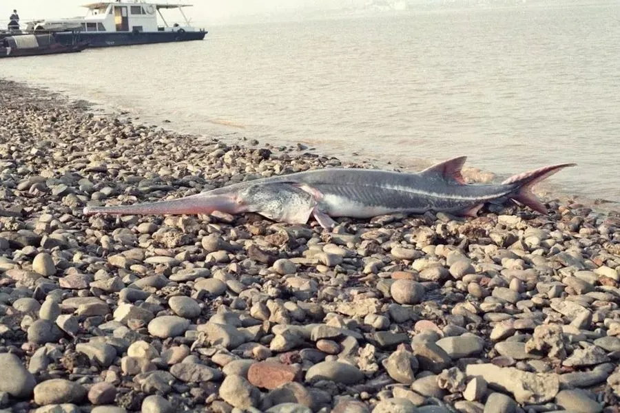

鱼类 · 动物界
白鲟 Psephurus gladius

中国特有的巨型淡水鱼，吻部长如利剑，被称为“中国剑鱼”，2022 年被世界自然保护联盟宣布灭绝。
- 分类
- 门脊索动物门纲硬骨鱼纲目鲟形目科匙吻鲟科属白鲟属
- 栖息环境
- 长江干流及主要支流的深水江段，偶尔进入河口咸淡水区
- 地理分布
- 中国长江水系干流及主要支流，以四川、湖北江段较为常见
- 保护级别
- IUCN 灭绝（EX，2022 年）；中国国家一级保护动物，野外已功能性灭绝
物种志
白鲟体呈长梭形，吻部向前极度延长，呈扁平的剑状，可占体长的三分之一，口大而位于头部腹面，口中布满细小的牙齿。体表裸露无鳞，皮肤光滑，背鳍位置靠后，尾鳍上叶长于下叶。它是长江中体型最大的鱼类之一，成鱼体长一般 2–3 m，最大记录接近 7 m，体重可达数百千克，以鱼类为主食，堪称长江淡水生态系统中的顶级掠食者。剑状吻部上分布着大量电感受器，能在浑浊的江水中感知猎物产生的微弱电场。
白鲟在长江上游与中下游之间洄游，每年春季上溯到金沙江下游江段产卵，幼鱼顺流而下，到中下游及河口一带育肥。由于过度捕捞、航运干扰和葛洲坝等水利工程阻断洄游通道，其种群在 20 世纪后期迅速崩溃。最后一尾被确认的活体是 2003 年在四川宜宾江段误捕的个体，救治放流后再未出现确切踪迹，尽管此后多次组织调查，仍一无所获，2022 年 IUCN 正式将其列为灭绝。
形态与习性
- 食性肉食性，以鲤科等中小型鱼类为主，也捕食虾蟹
- 体长一般 2–3 m，最大记录约 7 m
- 体重成年个体常达 150–300 kg
- 寿命推测可达 30 年以上
- 繁殖春季在长江上游江段产卵，卵粒小、数量多
- 现状2003 年后无确切活体记录，2022 年被宣布灭绝
趣味知识
- 白鲟的剑状吻部布满电感受器，能在浑浊江水中感知猎物发出的微弱电场。
- 它与中华鲟同为长江两大鲟形目旗舰物种，但白鲟的吻部远比中华鲟细长。
- 2003 年宜宾渔民误捕的一尾白鲟被救治后放流，此后再无人见过它的踪迹。